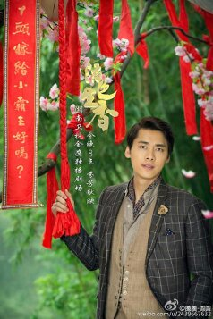

剪辑视频作品
古剑奇谭
李易峰（饰百里屠苏)，原名韩云溪，太子长琴半身。幼时经历灭族之灾，本来已死去，
但因体内被封进了太子长琴一半魂魄而得以死而复生。身怀凶剑焚寂的煞气，在某次煞气发作中被紫胤
真人所救，后拜入昆仑山天墉城，以“屠绝鬼气，苏醒人魂”之意更名为“百里屠苏”。十年后，他为寻
找灭族仇人而离开天墉城，踏上了漫漫征途。

活色生香
李易峰（饰宁致远），宁家大少爷，香业大佬的二世祖小霸王，是一位由于天生没
有嗅觉就立志当一个合格的败家子儿的“废柴少爷”，后被治愈。很喜欢乐颜，后来也如愿娶到乐颜。
经常和妹妹一起“坑爹”，让宁老爷又气又爱。后期为家仇国恨变腹黑。
青云志
李易峰（饰张小凡），《诛仙》主人公。性格倔强坚定，重情重义，身怀大梵般若功法和噬血珠，因缘际会
之下习得天下第一武功天书，是当世唯一一个佛、道、魔三修的人。原为青云门下大竹峰一脉弟子
，师从田不易，入门前师承天音寺高僧普智。七脉会武时，与小竹峰陆雪琪初遇，后在山海苑与鬼王之女碧
瑶相遇。第一次正魔大战后，身入鬼王宗，成为鬼王宗副宗主"鬼厉"，人称"血公子"。历经磨难，于幻月洞
府悟透人生后，用诛仙剑击败鬼王，挽救青云。
曾代言广告
植村秀广告，卖卸妆油、水的，贼。。。。贵